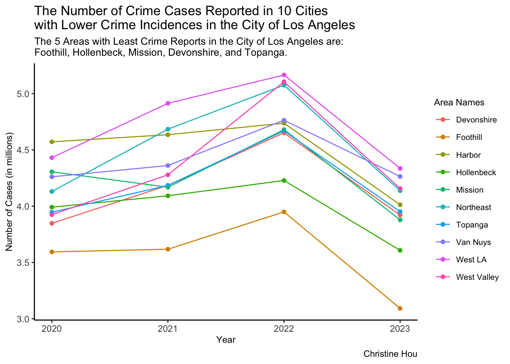

library(ggplot2)
library(dplyr)
library(tidyr)
library(readr)
library(lubridate)
library(forcats)Crime Data in Los Angeles
Febraury 10, 2020 to November 1, 2023
Introduction
The City of Los Angeles, a well-known and prosperous place in United States, attracts more people move in and settle down every year. It is common for every person to ask a question: Is the City of Los Angles a dangerous city, and what is the general distribution of crime incidences considering various factors? This similar safety evaluation of the city before living in the area formally is extremely important for every future residents. Therefore, the data analysis of crime incidences in the City of Los Anegeles provided by LAPD (Los Angeles Police Department) would be really helpful for future residents to choose the house(s)/apartment(s), and further determine daily activities such as grocery shopping, schools for children, and etc. We all now that keeping safe is always on the top.
Data Information
This dataset comes from Los Angeles Open Data - Public Safety-Crime Data from 2020 to Present, and it includes the information about crimes happened since Febraury 10, 2020, provided by LAPD (Los Angeles Police Department). I downloaded the dataset and began to conduct the analysis on November 5, 2023, and becuase the website is updated weekly, the dataset I analyzed on my web page contains the crime information from Febraury 10, 2020 to November 1, 2023.
Note
I compressed the dataset Crime_Data_from_2020_to_Present_20231105.csv into data.zip, and uploaded to GitHub directory for convenience. If the dataset link above accidently expires, you can get access to the dataset by visiting my GitHub directory.
The dataset contains 830K rows and 28 columns, and the data dictionary is here.
Analysis
Pre-Analysis
Data Overview
First, read the data from data.zip file, and store it in local environment.
data <- read.csv(unz("data.zip", "Crime_Data_from_2020_to_Present_20231105.csv"), header = TRUE,sep = ",")Then, let’s have a brief overview of this dataset.
dim(data)[1] 829778 28colnames(data) [1] "DR_NO" "Date.Rptd" "DATE.OCC" "TIME.OCC"
[5] "AREA" "AREA.NAME" "Rpt.Dist.No" "Part.1.2"
[9] "Crm.Cd" "Crm.Cd.Desc" "Mocodes" "Vict.Age"
[13] "Vict.Sex" "Vict.Descent" "Premis.Cd" "Premis.Desc"
[17] "Weapon.Used.Cd" "Weapon.Desc" "Status" "Status.Desc"
[21] "Crm.Cd.1" "Crm.Cd.2" "Crm.Cd.3" "Crm.Cd.4"
[25] "LOCATION" "Cross.Street" "LAT" "LON" This dataset has approximately 830K rows and 28 columns, containing many useful information including crime report data, number of cases, crime area/age/sex/serious level/address, etc. There are many analysis possibilities using this dataset.
for (col in 1:ncol(data)) {
print(paste(colnames(data)[col], sum(is.na(data[col]))))
}[1] "DR_NO 0"
[1] "Date.Rptd 0"
[1] "DATE.OCC 0"
[1] "TIME.OCC 0"
[1] "AREA 0"
[1] "AREA.NAME 0"
[1] "Rpt.Dist.No 0"
[1] "Part.1.2 0"
[1] "Crm.Cd 0"
[1] "Crm.Cd.Desc 0"
[1] "Mocodes 0"
[1] "Vict.Age 0"
[1] "Vict.Sex 0"
[1] "Vict.Descent 0"
[1] "Premis.Cd 10"
[1] "Premis.Desc 0"
[1] "Weapon.Used.Cd 540459"
[1] "Weapon.Desc 0"
[1] "Status 0"
[1] "Status.Desc 0"
[1] "Crm.Cd.1 10"
[1] "Crm.Cd.2 768750"
[1] "Crm.Cd.3 827720"
[1] "Crm.Cd.4 829717"
[1] "LOCATION 0"
[1] "Cross.Street 0"
[1] "LAT 0"
[1] "LON 0"Some columns exist the NA values, and some character columns have empty strings without providing any useful information. Therefore, pay attention to these columns, and process the dataset using some filter functions to perform better analysis.
Data Analysis
Like what I mentioned in Introduction part, people are caring about the safety of living area. Therefore, in my analysis, I will focus on answering the question: what are the crime statistics in top 5 safest areas in the City of Los Angeles?
What the names of top 5 safest areas?
I first select top 10 living areas in the City of Los Angeles from 2020 to 2023 to narrow the target range.
top_10 = data %>%
select(Date.Rptd,Crm.Cd, AREA.NAME) %>%
mutate(Date.Rptd = mdy(sub("(\\d{2}/\\d{2}/\\d{4}).*", "\\1", Date.Rptd))) %>%
mutate(Year = year(Date.Rptd)) %>%
arrange(Date.Rptd) %>%
group_by(AREA.NAME) %>%
summarize(cases = sum(Crm.Cd)) %>%
arrange(cases) %>%
head(10)
top_10# A tibble: 10 × 2
AREA.NAME cases
<chr> <int>
1 Foothill 14253246
2 Hollenbeck 15920715
3 Devonshire 16606888
4 Topanga 16752061
5 Mission 17033601
6 West Valley 17465720
7 Van Nuys 17649650
8 Harbor 17957531
9 Northeast 18028737
10 West LA 18846740Next, we can plot how the crime cases change over time to see which five areas will be the best choices for future residents to consider after 2023 (Sometimes, there exists the fluctuations).
data %>%
select(Date.Rptd,Crm.Cd, AREA.NAME) %>%
filter(AREA.NAME %in% top_10$AREA.NAME) %>%
mutate(Date.Rptd = mdy(sub("(\\d{2}/\\d{2}/\\d{4}).*", "\\1", Date.Rptd))) %>%
mutate(Year = year(Date.Rptd)) %>%
arrange(Date.Rptd) %>%
group_by(AREA.NAME,Year) %>%
summarize(cases = sum(Crm.Cd),.groups='drop') %>%
ggplot(aes(x = Year, y = cases,color=AREA.NAME)) +
geom_point() +
geom_line() +
labs(
x = "Year",
y = "Number of Cases (in millions)",
title = "The Number of Crime Cases Reported in 10 Cities\nwith Lower Crime Incidences in the City of Los Angeles",
subtitle = "The crime incidences of 10 cities show similar trends\nThe top 5 safest area in the City of Los Angeles are: \nFoothill, Hollenbeck, Mission, Devonshire, and Topanga.",
caption = "Christine Hou",
color = "Area Names"
) +
scale_y_continuous(labels = scales::comma_format(scale = 1e-6))+
theme_classic() +
theme(
plot.title = element_text(size=13),
plot.subtitle = element_text(size=10),
legend.title = element_text(size=9),
legend.text = element_text(size=8),
axis.title = element_text(size = 9),
axis.text = element_text(size = 9)
)
What are the victim age and sex in the five areas?
top_5 = c("Foothill", "Hollenbeck", "Mission", "Devonshire","Topanga")